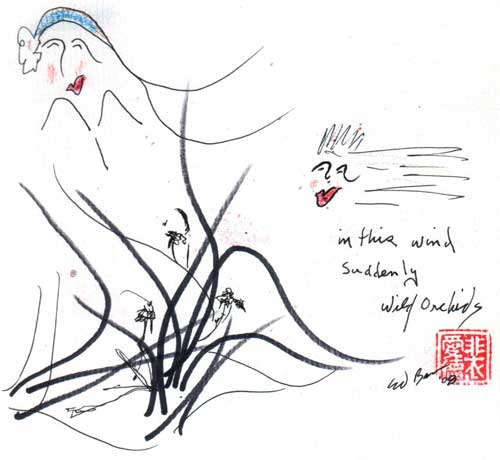
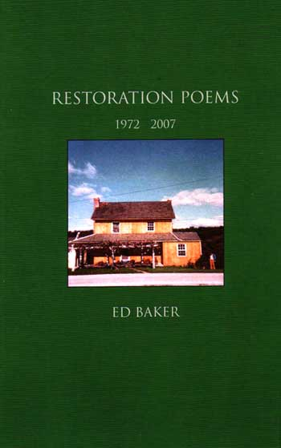
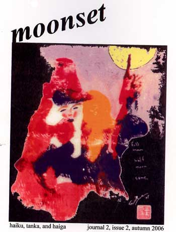

Jester-Knight
Literature
Film
Music
Visual Art
Tributes
Submissions
Links
Contact
Ed Baker

Biography
Ed Baker is an artist and poet who resides in Takoma Park, Md. He is 67.
Artist Statement
I (mostly) just watch and wait for something to happen; and,
something always does. in the case of Neighbor ... well I had not
written a single thing between 1978 and 1998 the ... ALL OF A SUDDEN,
POW! out my window … seen … 'this' goddess ... my (next-door)
neighbor! like, getting woke-up instantaneously all of a sudden
goddess, kama, 'me', 'her', poems, images, art e v e r y w h e r e…
and I realized (not so much the "things" produced.. but, that, I, was,
(am), "them"…
so, inside and outside became just as it is, s a m e … no
need to
differentiate now, then, or later...
add a little western angst (Freud, Rilke, Celan, Sartre, etc) and my
own brand of zen/religion/attitude a dash of my humour... and 67 years
of my own experiences/memories a sprinkle of wanton-desire then
POWW ... we (I) get long poems and non-stop images:
Neighbor
G oo dnight
Stone Girl
Wild Orchid
full moon
Things Just Come Through
Restoration Poems
al 1998–2008
priorly (1970–1978):
Song of chin
Points/Counterpoints
Okeanos Rhoos
The City
Re:circulation
Hexapoems 1
Hexapoems 2
Hexapoems 3
so, there are (also) 10,000 poems
10,000 haiku
10,000 water colors (mostly “her”/goddesses)
623 3-d pieces
below is a piece just done this morning [12/17/2008] (three goddess "in the wind"):

Click here to see more of Ed's artwork! NEW!!!
Ed’s website:
http://edbaker.maikosoft.com
His work also appears in Sketchbook: A Journal for Eastern & Western Short Forms.
Interviews with Ed:
http://tobaccoroadpoet.blogspot.com
http://dbqp.blogspot.com/2008/11/at-border-of-silver-and-tacky.html
Ed's UMA|book of sketches of the goddess in Sarojini Satoo's novel
The Dark Abode:
http://www.redroom.com/publishedwork/the-dark-abode
and some questions that he answers at bottom of this article:
http://www.redroom.com/blog/sarojini-sahoo/conversation-ed-baker
Books Published:
Butcher of Oxen (Doxie Press, 1972)
The City (Red Ochre Press, 1972)
Song of Chin (draft #12) (tel let, 2005)
Wild Orchid w/sumi-e by Fay Chin (tel let, 2002)
Things Just Come Through (Red Ochre Press, 2005)
Twenty Four Ways of Seeing w/sumi-e by Fay Chin (tel let, 2002)
Okeanos Rhoos (Johns Hopkins, 1972)
RESTORATION LETTERS: correspondence 1972–1978 (Cid Corman–Ed Baker)
RESTORATION POEMS: 1972–2007 (Country Valley Press, 2008)

countless poems published in:
Athanor
Cold Spring Journal
Flute
Alaph
Hummingbird
South x Southeast
Modern Haiku
Odyessus
haigaonline
PoetryBridge
Moonset
etc.

Moonset Literary Newspaper
Click below for Ed's work
HEXAPOEMS II (.pdf)
Neighbors 1: Arousal (.pdf)
Neighbors 2: Calling You (.pdf)
Neighbors 3: Shades (.pdf)
Neighbors 4: FU:SION (.pdf)
Neighbors 5: Intersection (.pdf)
Neighbors 6: Afterwards (.pdf)